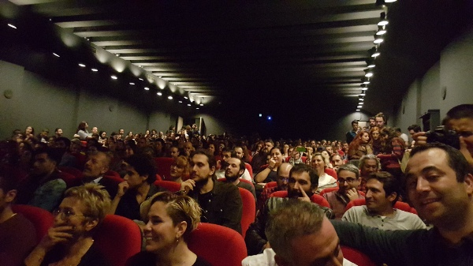
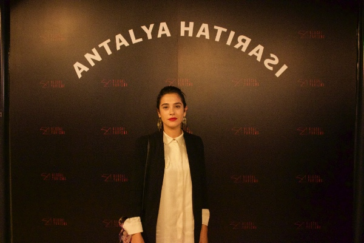
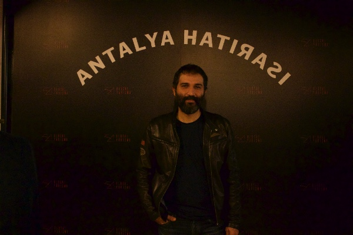
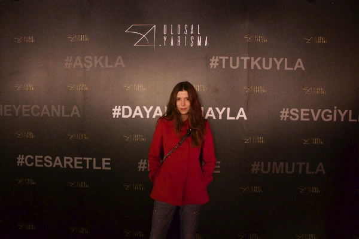
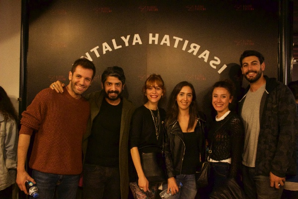
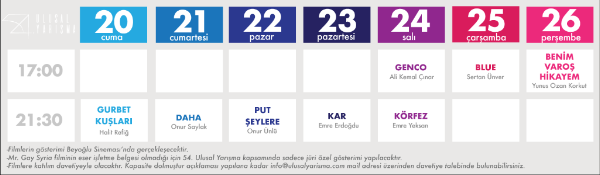

54. Ulusal Yarışma - Daha
54. Ulusal Yarışma filmlerinden Daha, yönetmen Onur Saylak,filmin oyuncuları ve ekibin katılımıyla gösterildi. Sinema ve televizyon dünyasından ünlü oyuncularla birlikte sinemaseverlerin de yoğun ilgi gösterdiği filmin ardından Utku Ögetürk moderatörlüğünde söyle şi yapıldı.
Film gösterimi öncesinde yönetmen Onur Saylak, 54. Ulusal Yarışma'ya "korkmadıkları, dimdik ayakta durup gözlerinin içine bakabildikleri" için teşekkür etti. Saylak sözlerine "Bu benim yönetmen olarak ilk sinema filmim. Burada pek çok dostumun arasındayım. Yıllar önce bana inanan ve benimle birlikte yürüyen bütün dostlarıma ve Daha ekibine bana güvendikler için çok teşekkür ederim." diye devam etti.
Yoğun ilgiyle karşılanan film, jeneriği boyunca alkışlara boğuldu. Seyircisinden tam not alan filmin vizyon tarihi heyecanla bekleniyor.
Oyuncu Onur Saylak’ın yönetmenliğini yaptığı ilk film olan Daha, Hakan Günday’ın aynı isimli romanından uyarlandı. 14 yaşındaki Gaza, yaşadığı küçük sahil kasabasından ayrılarak büyük şehirde liseyi okumayı hayal ederken, babasının onu insan kaçakçılığı şebekesinin bir parçası haline getirmesiyle suçla tanışır. Gaza’nın ergenliği, babasının baskıcı karakteri ve sürekli gözlemlediği göçmenlerle geçmeye başlar. Gaza, babası gibi şiddet ve baskı üzerine bir hayat mı kuracak, yoksa o da bir göçmen mi olacaktır?
     